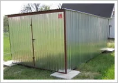
GARÁŽ č. 3511
Garáž so spádom strechy dozadu, dvojkrídlové dvere.
- Šírka
- 2,95 m, Dĺžka : 5,00 m
- Výška vpredu
- 2,13 m, Výška vzadu : 1,90 m
- Prejazdová výška
- 1,96 m, Prejazdová šírka : 2,87 m
Montované plechové garáže na mieru, doprava a montáž v rámci Slovenska zdarma.
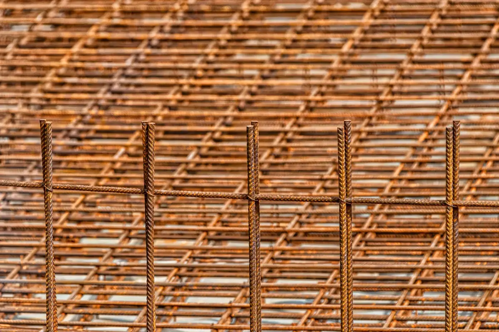
Výrobok je montovaná plechová garáž, vhodná ako rýchle a lacné riešenie na garážovanie auta, uskladnenie stavebného materiálu, záhradného náradia.... . Hodí sa k domu, chate alebo nezastavanému pozemku. V štandarde je vyrobená zo samonosnej kovovej konštrukcie, obalená trapézovým pozinkovaným plechom. Pokrytie konštrukcie je možné vyrobiť aj z trapézového plechu v rôznych farbách s ochranným povlakom z polyesteru.
Možnosť vyrobenia konštrukcie akýchkoľvek rozmerov, s dvojkrídlovou alebo výklopnou garážovou bránou, s ľubovolnou úpravou totožnou s potrebami a nápadmi klientov.

Garáž so spádom strechy dozadu, dvojkrídlové dvere.
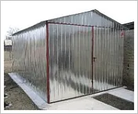
Garáž s dvojspádovou strechou, dvojkrídlové dvere.
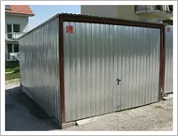
Garáž so spádom strechy dozadu, výklopné dvere.
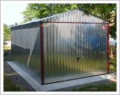
Garáž s dvojspádovou strechou, výklopné dvere.
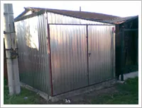
Garáž so spádom strechy na ľavú alebo pravú stranu, dvojkrídlové dvere.
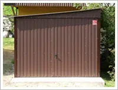
Garáž so spádom strechy na ľavú alebo pravú stranu, výklopné dvere.
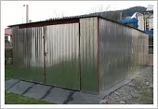
Garáž so spádom strechy dozadu, dvojkrídlové dvere.
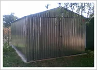
Garáž s dvojspádovou strechou, dvojkrídlové dvere.
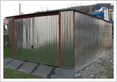
Garáž so spádom strechy dozadu, výklopné dvere.
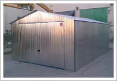
Garáž s dvojspádovou strechou, výklopné dvere.
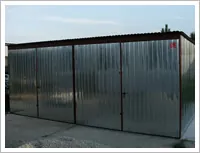
Dvojgaráž so spádom strechy dozadu, 2x dvojkrídlové dvere.
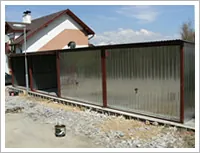
Dvojgaráž so spádom strechy dozadu, 2x výklopné dvere.
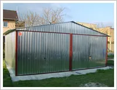
Dvojgaráž s dvojspádovou strechou, 2x dvojkrídlové dvere.
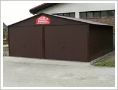
Dvojgaráž s dvojspádovou strechou, 2x výklopné dvere.
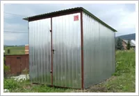
Domček so spádom strechy dozadu. Dvojkrídlové dvere na celú šírku, alebo len dvere jednokrídlové šírky 90 cm.
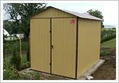
Domček s dvojspádovou (sedlovou) strechou. Dvojkrídlové dvere na celú šírku, alebo len dvere jednokrídlové šírky 90 cm.
Odtiene uvedené vo vzorkovníku sa môžu mierne odlišovať od skutočného odtieňa vybratej farby!
Spočítame spotrebu, pripravíme ponuku a dohodneme dopravu na stavbu.